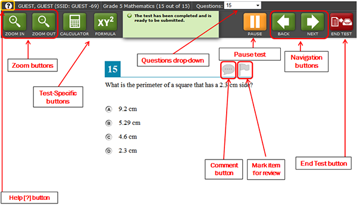

The following test tools are available:
| Global Tools | Description |
|---|---|
| Help [?] button | The [?] button at the top left will open this Test Information and Help page. |
| Zoom buttons | Use the [Zoom In] and [Zoom Out] buttons to increase and decrease the font size. Four levels of magnification are available. |
| Past/Marked Questions drop-down list | This feature enables you to quickly return to a specific test page. Questions that have an item marked for review will display “(marked).” |
| Calculator button | Click the [Calculator] button to open the on-screen calculator.
Note: The calculator is available for Grades 3–8 and High School Math; Grades 5, 8 and High School Science; and Grades 5, 8, and High School Social Sciences tests. |
| Formula button | Click the [Formula] button to open the on-screen reference sheet. Note: The formula sheet is available for Grades 6–8 and High School Math tests. |
| Periodic Table button | Click the [Periodic Table] button to view it.
Note: The periodic table is available on all Science tests. |
| Save button | This button allows you to manually save technology-enhanced items. This is an optional feature. If you do not click this button, your answers will still be saved.
Note: This button will not appear on pages that have only multiple-choice items. |
| Pause button | This button allows you to pause the test. When you return to the test, you will be directed to the first page that has unanswered items. |
| Navigation buttons | The [Back] and [Next] buttons in the top right corner permit you to move between pages on a test. |
| End Test button | This button appears after all test items have been answered. Click this button to begin submitting the test. |
| Stimulus/Item Tools | Description |
|---|---|
| Stimulus Expansion Tool | Some test pages have a passage or activity on the left side of the page. You can expand this section.
|
| Comment | Each item has a comment/feedback icon. Click the icon to open the pop-up window and provide feedback about the item. |
| Tutorial | Each item has a tutorial that explains how to answer each item type. Click the round [ i ] button to open the tutorial video. |
| Mark for Review | Each item has a flag icon. Click the flag to identify that item as one you may want to return to later. (The flag will turn dark blue and display a check mark.)
Note: If you paused the test for more than 20 minutes, you may not be able to review these items. |
| Strikethrough | For multiple-choice items, you can "eliminate” an option and focus on what you think may be the right options. Right click on an answer option and select “Strikethrough.” A line will appear through the text or image. |
The pause rule does NOT apply to OAKS Writing and ELPA tests. You may review your answers after the test has been paused for 20 minutes.
ELPA Note: Once you complete an ELPA section, you cannot go back to it.